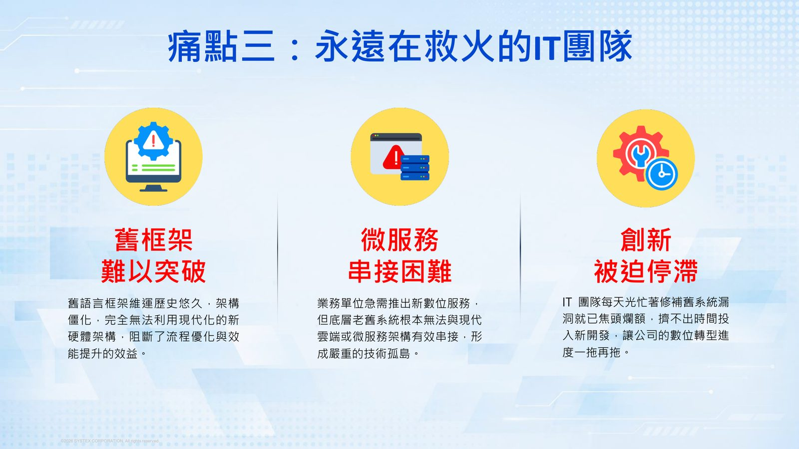
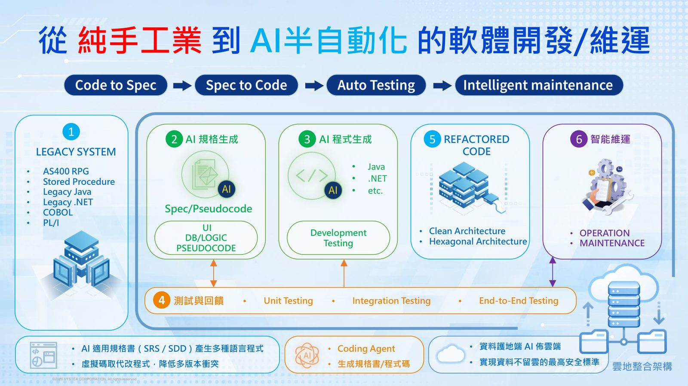
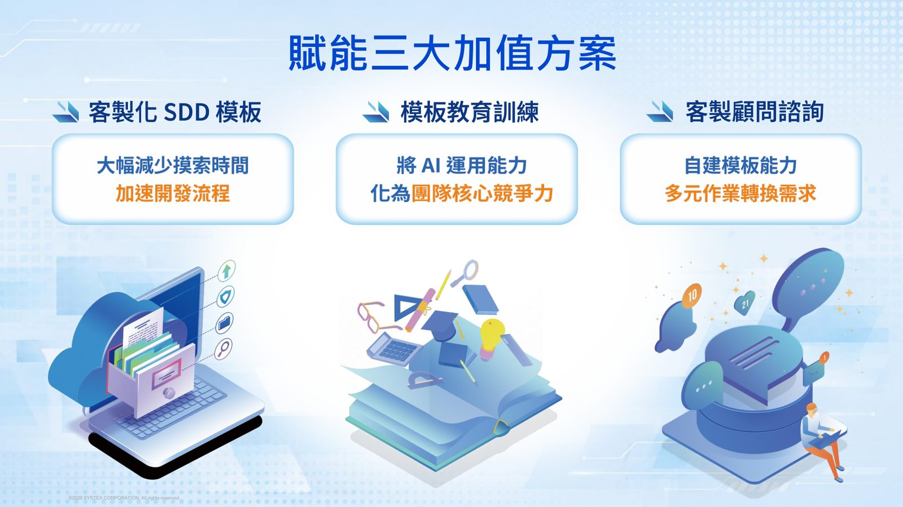
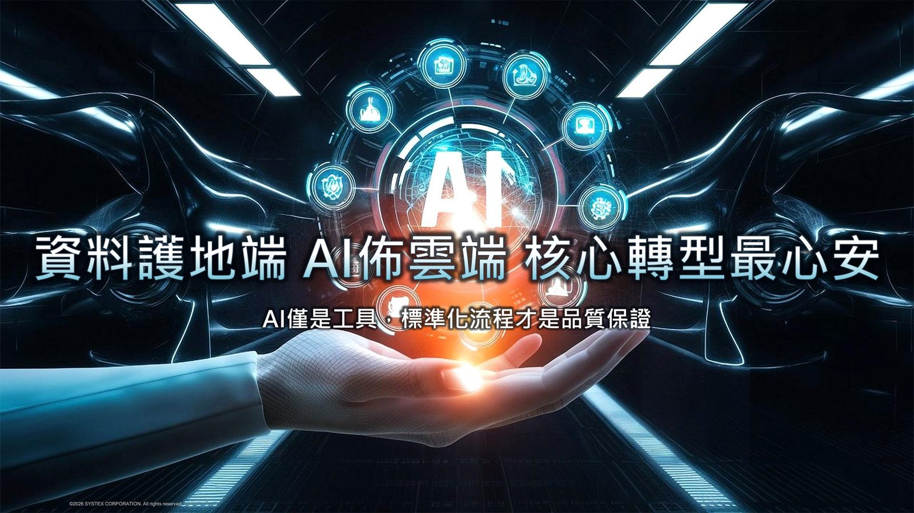

摘要
本場演講由精誠資訊協理洪欽文分享 SYSTEX CODEXAI 如何協助企業因應舊系統轉型三大痛點：缺乏透明度的高耦合架構、高度仰賴人工盤點導致開發時間冗長，以及永遠在救火的 IT 團隊。講者提出「從純手工業到 AI 半自動化」的軟體開發／維運流程，透過 AI 自動產生規格書（Spec/Pseudocode）與程式碼，並以兩個銀行業 POC 案例的具體數據，展示規格驅動開發（SDD）如何大幅縮短工時、提升效率，同時分享顧問賦能團隊自行客製化模版的服務價值。
重點整理
- 舊系統轉型三大痛點：資深人才斷層與高耦合架構、高度仰賴人工盤點、IT 團隊被舊框架與救火工作綁住而創新停滯
- 提出「Legacy System → AI 規格生成 → AI 程式生成 → Refactored Code → 智能維運」的 AI 半自動化開發／維運流程
- 銀行業案例一（12 支 COBOL、11 張報表）：工時縮減 83%、效率提升 6.1 倍，AI 產出完整 Spec 內容供維運與開發參考
- 銀行業案例二（2 萬行以上 COBOL 及相關副程式）：工時縮減 90%、效率提升 10 倍，讓大型程式盤點從「不可行」變「可行」
- 以標準化的 Spec-Driven Development（SDD）模版作為人類意圖與 AI 執行之間的橋樑，並透過顧問服務賦能團隊「自行客製化」模版
重點圖片／架構圖




舊系統轉型的三大痛點
講者指出企業在系統轉型時常見三大痛點：其一是缺乏透明度的高耦合架構，熟悉 COBOL 語法與核心邏輯的資深人才即將退休，加上文件龐大複雜，團隊往往不敢輕易修改程式碼，深怕「牽一髮動全身」；其二是高度仰賴人工盤點，面對龐大且縱橫交織的排程與資料表關聯，傳統作業流程極易疏漏，一旦前置盤點遺漏將嚴重衝擊系統移轉品質；其三是永遠在救火的 IT 團隊，舊語言框架難以突破、微服務串接困難，導致創新被迫停滯。
從純手工業到 AI 半自動化的開發流程
SYSTEX 提出的解方是「從純手工業到 AI 半自動化」的軟體開發與維運流程：先將 AS400 RPG、Stored Procedure、Legacy Java/.NET、COBOL、PL/I 等舊系統程式碼，透過 AI 規格生成轉換為 Spec/Pseudocode，再由 AI 程式生成產出 Java、.NET 等多種語言的重構程式碼，並依循 Clean Architecture／Hexagonal Architecture 設計。整個流程涵蓋開發、測試（單元、整合、端到端測試）與智能維運，並強調資料留在地端、AI 佈署於雲端的雲地整合架構，實現資料不落地的最高安全標準。
銀行業案例分享：Code to Spec + Spec to Code
第一個案例以 2 支排程、12 支 COBOL 程式、11 張月報表為標的，目標是產出規格文件與可運行的新程式，實測結果顯示人工作業減少超過八成（工時縮減 83%），相同任務產出倍增達 6.1 倍。AI 產出的 Spec 內容涵蓋前後端規格、API 設計、程式流程圖、輸入輸出說明、業務邏輯與驗證檢核、資料表清單、副程式清單與錯誤代碼對照表，讓老系統升級不再依賴少數資深人力。
大型程式盤點案例：2 萬行 COBOL 規格還原
第二個案例則挑戰一支超過 2 萬行的 COBOL 程式及其相關副程式，目標是還原規格文件、建立系統知識基礎。實測結果顯示工時縮減達 90%，效率提升 10 倍，證明 AI 能讓大型程式盤點從「不可行」變為「可行」，大幅降低人工盤點時間隨程式架構複雜度呈指數上升、易出錯的問題，加速老舊系統的現代化進程。（註：以上數據為 POC 實測結果，實際效益會依原始程式結構、文件完整度與環境條件而有所差異。）
SDD 模版與顧問賦能服務
演講介紹 Spec-Driven Development（SDD）模版作為標準化執行模版，依據客戶最具代表性的程式碼打造，作為人類意圖與 AI 執行之間的橋樑，強制 AI 遵循特定邏輯結構與輸出格式，確保不同資歷的開發人員都能產出一致的高品質規格文件。講者也強調顧問服務的核心價值是「從會用到會改」：透過多天的深度協作，教導客戶團隊如何自行客製化模版，真正實現技術內化與自我客製化能力，最終總結「AI 僅是工具，標準化流程才是品質保證」，並堅持資料護地端、AI 佈雲端的核心轉型原則。